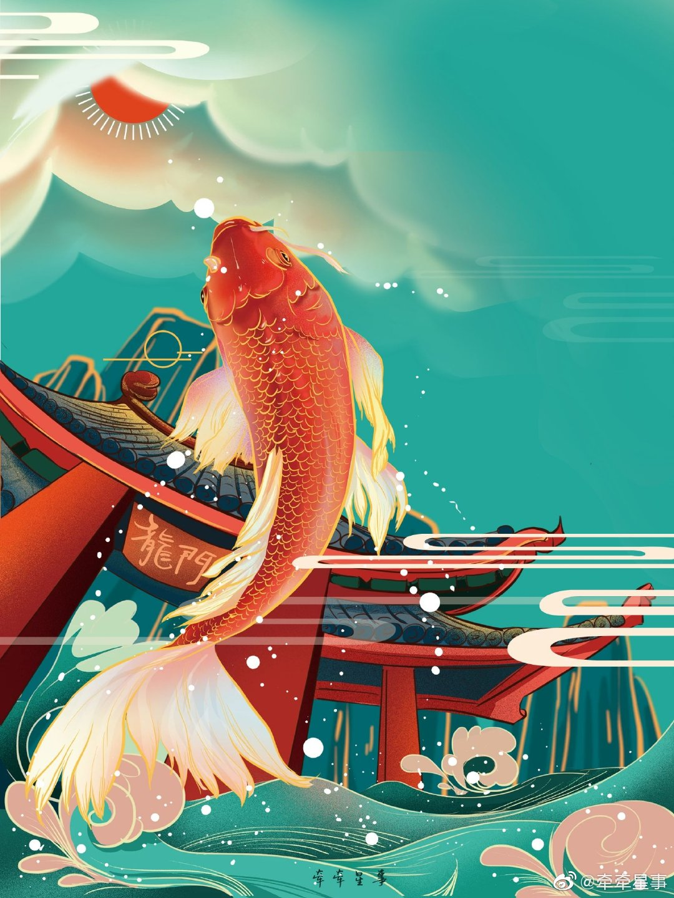
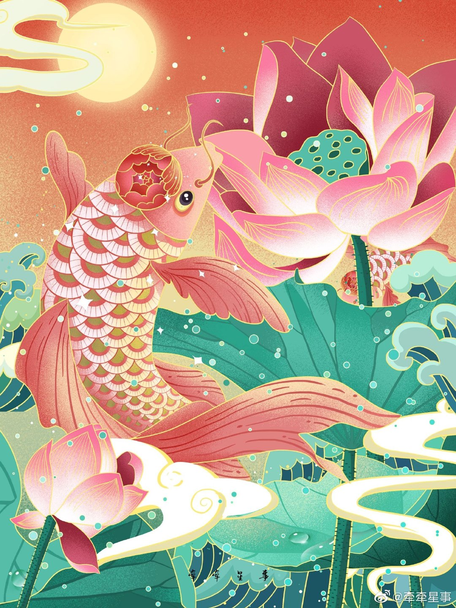
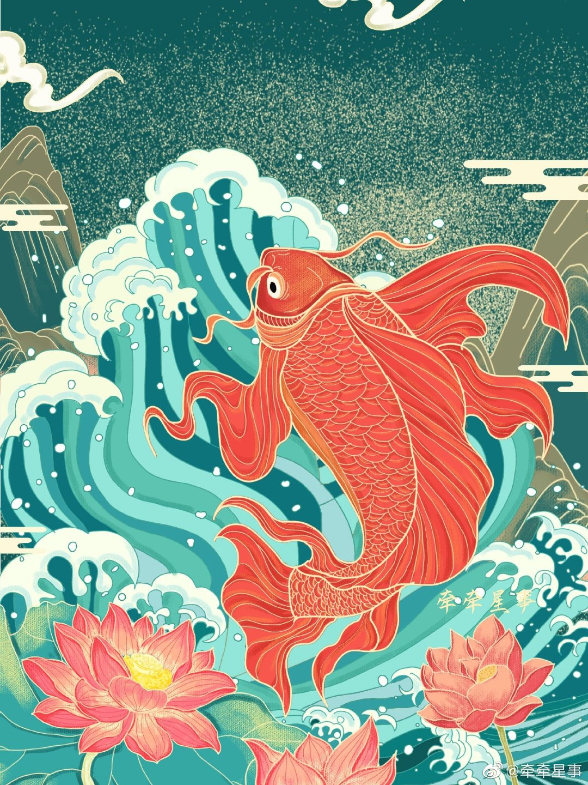
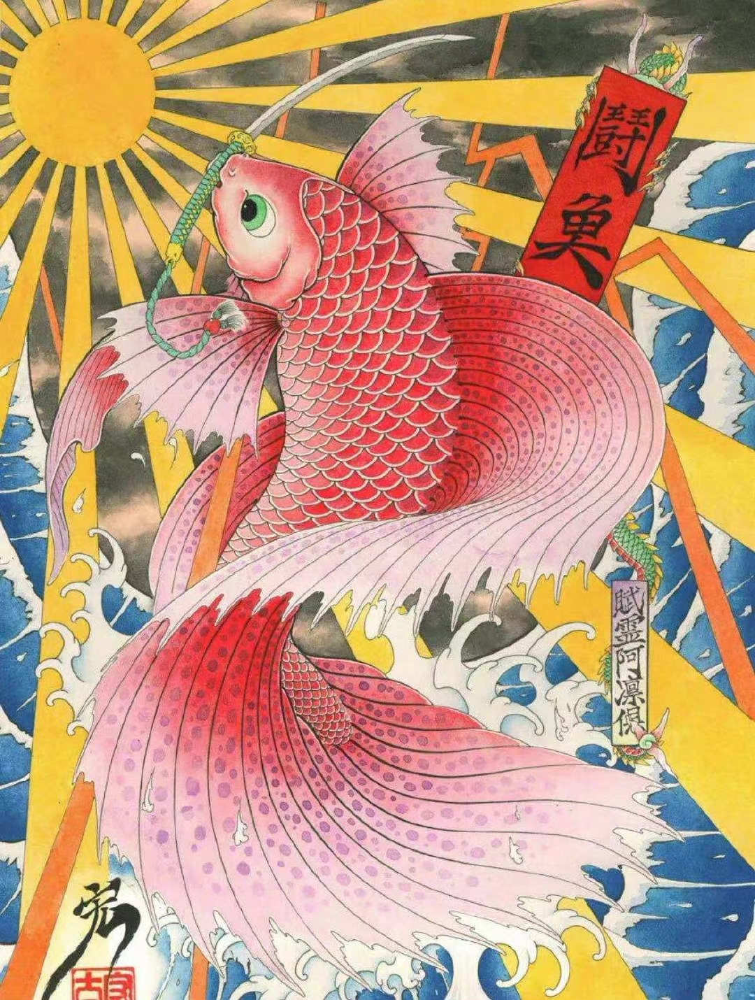

王婕，这是我给你写的网站。不要分享这个网址给别人哦。暂时算是我们之间的小秘密吧 ： ）
我钢琴入门级别 所以音乐不精 也不会作画 但好诗词歌赋
“云想衣裳花想容，春风拂槛露华浓。若非群玉山头见，会向瑶台月下逢。” 李白的诗写的好 我觉得适合你
这个网站不定期更新内容 也给你分享一些东西 比如搞笑治愈视频 文字 音乐等 希望你开心快乐每一天！ 开心最重要了
2021 07/11 一点感想
三毛说：“心之何如，有似万丈迷津，遥亘千里，其中并无舟子可以渡人，除了自渡，他人爱莫能助”。
关于你留在上海继续成长 或转去微整 或是去浙江发展 主要还是听从自己内心的声音 时间允许的话 需慎重考虑
事业对你来说是重要的。时间，青春年华对女孩来说就更重要了！这个我深刻的知道
这种人生抉择的时刻 “除了自渡，他人爱莫能助”
我觉得你挺温柔 也挺实在的 可爱 这是我目前对你的印象
不知道你对我的第一印象如何？微信告诉我 或是 下次有机会再见面的时候再告诉我吧
关于我 其实 我觉得我是一个足够有能力让我将来的另一半过上稳定舒适的生活的人😄
我本想着更深入的了解你一些😊 想着希望不超过两三个月时间来了解吧（我知道耽误一个女孩子很多时间 那是不对的）没想到你就要去浙江了 哈哈
随缘吧
总之 祝好运！
2021 07/12 About Time
这个电影我很喜欢 About Time 看过吗 你无聊的时候 可以看看
分享一个电影小片段(可能又被加了广告😊 这锅我不背 youku自动加的) 还有主题曲 How long will I love you
2021 07/13 我们是哪种人？江湖上的人。
贾樟柯《江湖儿女》：我经过最大的风浪，是和你的爱情
我喜爱的导演 贾樟柯 和 他的电影 江湖儿女
音乐: 江湖儿女
2021 07/14 一点感想
这段关于爱的文字 我觉得很好 我很赞同 分享一下 因为你追求爱情 我也追求爱情
让我们先看看爱的定义吧
“爱是恒久忍耐，又有恩慈；爱是不嫉妒；爱是不自夸，不张狂，
不作不合宜的事，不求自己的益处，不轻易发怒，不计算人的恶，
不因不义而欢乐，却与真理同欢乐；
凡事包容，凡事相信，凡事盼望，凡事忍耐。”
我觉得深入了解一个人 需要更长时间的了解
如果不是你有可能去浙江不回来 今晚我就不会这么快和你说出我所有的心思了 我发现我把所有的思路 观点都说出来了😅
刚吃饭两次 就这样说出我的心意 你以为我不要面子哒😭 没办法 特殊情况
我只是想让你知道
如果 如果以后有机会 我希望了解你更多 你也有机会可以了解我更多
算是我今晚最想说的话了吧
还有这首歌 感觉也不错
音乐: 小さな恋のうた
2021 07/15 因为你,我想成为更好的人
今天网页更新的不多 就一句话吧 最近一直盘桓在我的脑海
you make me want to be a better man（因为你,我想成为更好的人）.
我一定会越来越优秀的 对此我充满了信心 I'm motivated by you.
2021 07/16 希望这首歌能带给你安慰
音乐: 昴 (星) - 谷村新司 (たにむら しんじ)
我挺喜欢日本的
日本的那种风格
等疫情过了 日本开放了 我准备去日本旅行 看看富士山 北海道 樱花
日本的导演 是枝裕和 的电影 我都很喜欢
像 小偷家族 海街日记 比海更深
我很小时候看深田恭子的侦探片 还有电视剧龙樱（那时候哪知道新垣结衣 长泽雅美呀）
最近5年 我只看了3部电视剧 其实就包括一部日本电视剧 逃避虽可耻但是有用 一度对新垣结衣入迷（另外两部是 军师联盟 和 觉醒年代）
动漫就看炮姐 我喜欢炮姐的率真 真实 有种天真无邪的感觉（所以红楼梦的金陵十二钗里 我最喜欢的是史湘云， 史湘云第一次出场的时候，我就知道，我最喜欢的人物应该是她了）
还有进击的巨人（看了一季，后来就没看了）
我也很喜欢日本的作曲家 坂本龙一 日本演员 高仓健
高仓健的千里走单骑 演的太好了
还有千与千寻 宫崎骏和久石让 谁不喜欢呢
你喜欢日本的哪些呢？
2021 07/18 我知道，无论如何，你都会同样地爱我
在我体内有一头动物。
我知道。麻烦在于，我始终
不清楚那是头什么动物。
我怯懦时，它很像是
有一点风吹草动就往洞穴里
退缩、躲藏的尖耳朵兔子；
愤怒时，又从洞穴里冲出，
像一头咆哮着进击的野猪。
如你所见，我常常显露出
羊的驯顺、牛的坚忍和鹿的温柔。
还有狼的残酷、狐狸的狡猾，
熊的大腹便便的笨拙和镇定。
你见过我理智的时刻：一只鹰
所具有的宽广视野，精准如闪电的目力。
我的孤绝，像天鹅一般在高空
呼吸着稀薄的大气。
但也有另一些卑微的时刻，
变成学舌的鹦鹉，或再也飞不起来的
困在笼子里、任人宰割的禽类。
我向往海洋，仿佛体内有一条鱼
或一头海豚；但我根本不会游泳
也不能像那些善处江湖的人
一样翻江倒海。我身上
还有一些虫子：好斗的蟋蟀，
爱蹦跳的蚂蚱，饶舌、聒躁、
惹人心烦的鸣蝉。
当我在家中呆着，宅在某个房间
一动也不想动，我觉得自己
变成了某类线形的寄生虫。
那么，究竟是哪种动物？莫非
我不是一头，而是一群动物？
对于这个问题，你笑而不答。
我知道，无论何种情况，
你都会同样地爱我、包容我；
但我仍然不清楚，这究竟是因为
你也是和我一样的动物，还是说
你是为各种动物提供活动区域的
一条河、一片森林和一块牧场
2021 07/19 祝一切顺利




2021 07/21 这良辰美景 任时间静止 看云淡风清
我发现许飞的歌有种超然脱俗的感觉
想和你一起走遍世界 看遍世界所有风景
评论区